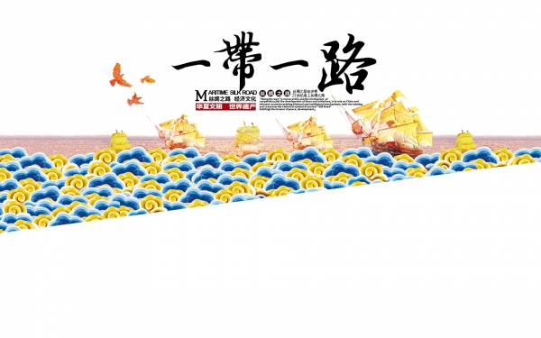
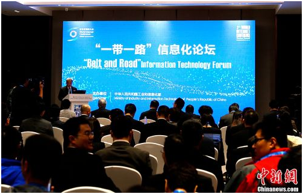
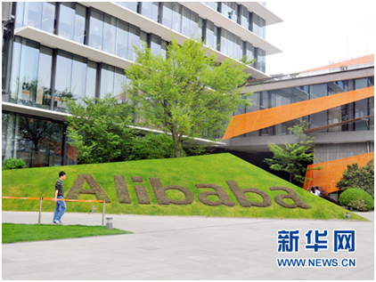
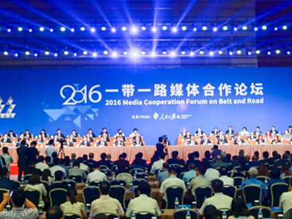
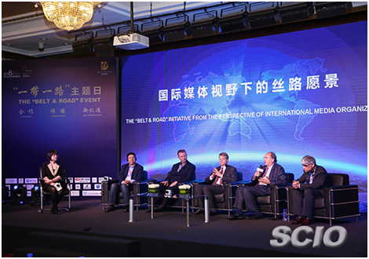

“一带一路”倡议自2013年提出，历经近4年的发展，它以政策沟通、设施联通、贸易畅通、资金融通、民心相通为主要内容，其实质是推动实体空间与虚拟空间相互结合。
“一带一路”发端于辉煌的中华文明，兴起于互联互通的网络时代，其建设不仅仅限于经济、文化、外交等现实空间领域的互利互惠，还应包括基于数据信息服务、互联网业务和国际通信业务等领域在内的、以信息沟通为纽带的信息领域的互联互通。
“一带一路”建设需要信息先行，信息建设是驱动“一带一路”相关国家发展经济的重要引擎。
今儿，跟着人民论坛网小编一起来看看“信息丝绸之路”如何助力“一带一路”建设。
一、信息丝绸之路：信息化的“一带一路”
2013年9月7日，习近平在哈萨克斯坦纳扎尔巴耶夫大学发表演讲，提出了共同建设“丝绸之路经济带”的畅想。同年10月，习近平出访东盟，提出共同建设“21世纪海上丝绸之路”。这二者共同构成了“一带一路”重大倡议。

2015年3月，为推进实施“一带一路”，让古丝绸之路换发新的生机活力，使互利合作迈向新的历史高度，中国政府特制定并发布《推动共建丝绸之路经济带和21世纪海上丝绸之路的愿景与行动》，其中明确提出：“共同推进跨境光缆等通信干线网络建设，提高国际通信互联互通水平，畅通信息丝绸之路。”
翻看“中国一带一路网”（国家“一带一路”官网，由推进“一带一路”建设工作领导小组办公室作为指导单位，国家信息中心主办。），小编发现它是这样阐释“信息丝绸之路”：
信息丝绸之路，指的是开辟以通信和互联网产业为抓手的新型国际贸易之路。在建设“一带一路”的过程中，沿路各国从信息交流上互联互通，而互联互通重在网络先行，同时应积极推动媒体共享共赢，在资源互换、人员交流、业务培训上加强互动，建立起多元、长效的交流合作机制，开拓媒体间互联互通的合作新局面。
由此可见，“信息丝绸之路”就是要加快“一带一路”的信息化建设。
当今社会，人们日常的工作、消费、娱乐都离不开网络服务，而在全球迈向信息时代的浪潮中，“一带一路”沿线国家的互联互通更离不开信息化，加强“一带一路”的信息基础设施建设，实现相关国家在数据信息服务、互联网业务和国际通信业务领域的互联互通，是建设“一带一路”的必然要求。
信息化的“一带一路”，可以说旨在实现沿线国家信息通信网络的互联互通，降低沿线国家的接入成本、缩小数字鸿沟，使各国人民共享“互联网+”带来的红利。可以说 “一带一路”倡议实施中的信息化建设具有重要意义，是持续深入推进“一带一路”倡议不可或缺的驱动力。
二、“一带一路”信息化建设的重要意义

（第三届世界互联网大会“一带一路”信息化论坛 种卿/摄 中新网）
第一，从对经济贸易的作用来看，信息化建设是“一带一路”沿线国家经济发展的助推器，是推动整个“一带一路”倡议实施的基础性工程。
“一带一路”不仅有利于实现内地不同区域信息资源互通有无，为资金、技术、管理经验的“引进来”与具有竞争力的产品、企业“走出去”提供重要信息支撑，而且有利于冲破国家之间的地理障碍，通过搭建跨境电商行业网络平台和跨境电商产业交易链，使跨境贸易走向无国界贸易，为沿线国家的综合物流、信息流、资金流提供便捷化服务。
第二，从信息基础建设的现实来看，“一带一路”沿线国家的信息化建设迫在眉睫。当前，我国已经形成了在技术设备和生产能力方面颇具竞争力的信息化基础设施的整体格局，具备走出国门的技术实力和服务。
“一带一路”建设实行“信息先行”，一方面有利于中国软件信息企业参与到“一带一路”信息化建设之中，使实力雄厚的信息企业走向国际舞台，增强中国企业的国际竞争力；另一方面也有利于从整体上缩小“一带一路”经济体与发达国家在信息化发展上的鸿沟，以最快的速度建立协同机制，提高沿线国家信息化建设能力。
第三，从网络空间博弈来看，以信息化为纽带推动“一带一路”建设，能够有力地改变当前网络空间存在的不对等局面，增强“一带一路”沿线国家的话语权。
“一带一路”倡议实施中的信息化建设尤其是网络基础设施的快速完善，有助于扭转沿线国家在网络空间“单打独斗”的被动局面，形成沿线国家话语体系建设的联动力量，实现“一带一路”沿线国家间的网络自主控制，有效解决互联网领域发展不平衡、规则不健全、秩序不合理等问题，有利于各国共同构建网络空间命运共同体，推动网络空间互联互通、共享共治，为开创人类发展更加美好的未来而努力。
三、各方对“一带一路”信息化建设的响应
1.通信企业：以中国移动为代表
（1） 促进通信设施联通，铺就信息高速公路
中国移动把通信基础设施建设作为推进“一带一路”设施联通的重要内容和先导行动，加大跨境陆地光缆、海底光缆等通信干线网络建设力度，提高“一带一路”通信设施互联互通水平。
（2） 加强通信业务合作，降低信息沟通成本
为促进“一带一路”经贸、文化、旅游等领域的往来交流，中国移动注重加强与沿线国家和地区通信运营商的业务合作，持续下调通信资费，降低信息沟通成本，注重加强通信质量保障，为客户提供价廉质优的信息通信服务。
（3） 推动4G TD-LTE全球发展，共享中国创新成果
在全球4G技术发展过程中，我国主导推动的TD-LTE技术，已成为国际电信联盟确定的全球4G国际标准之一。中国移动充分发挥在通信领域的国际影响力，积极推动TD-LTE在“一带一路”沿线的发展部署。牵头发起成立国际产业合作平台GTI（TD-LTE全球发展倡议），促进TD-LTE国际化推广。
（4） 开展通信本地化经营，打造信息经济走廊
伴随着共建“一带一路”的深入推进，中国移动积极探索国外股权投资和通信本地化经营新模式，直接在当地提供通信服务。
2007年在巴基斯坦收购巴科泰尔公司成立辛姆巴科公司——CMPak，中国移动依托辛姆巴科公司，重点打造“中巴信息走廊”，率先在巴基斯坦开通4G无线宽带服务，带动了移动互联网产业的普及与发展。辛姆巴科公司坚持本土化运营，直接或间接提供了超过5万个就业机会，促进了巴基斯坦经济社会发展。2011年辛姆巴科公司荣获巴基斯坦“总统奖”。
2.阿里巴巴“数字之路”

（阿里巴巴集团总部——杭州西溪园区内一角。郝斐然/摄 新华网）
“数字之路”源于阿里巴巴提出的“世界电子贸易平台”（Electronic World Trade Platform，简称eWTP）。在阿里巴巴eWTP项目总负责人宋君涛看来，古代丝绸之路由一个个驿站链接，“数字丝绸之路”将由若干个“数字中枢”（E-hub）组成，“数字中枢”为中小企业提供一切数字贸易的基础设施，让中小企业能够在全球范围内自由买卖、自由参与国际贸易分工。“eWTP的推动就是国家‘一带一路’战略的民间驱动和商业实践。其意义在于充分利用互联网经济，把传统的分销模式转化为直销模式，这也是发展中国家或者中国弯道超车的机会所在。”
据悉，3月22日，海外首个eWTP“数字中枢”落户古代海上丝绸之路重要节点之一的马来西亚。其他多个东南亚国家也对eWTP表现了强烈的兴趣。
3.“一带一路”媒体合作论坛

人民日报先后于2014年、2015年、2016年举办了丝绸之路经济带媒体合作论坛和两次“一带一路”媒体合作论坛，各国媒体积极发挥窗口、桥梁、纽带作用，促进不同国家和地区之间人民的理解和信任，推进相关各国加强政治、经贸、文化、媒体等领域的交流合作。
正如习近平在2016“一带一路”媒体合作论坛的贺信中所说，媒体在信息传播、增进互信、凝聚共识等方面发挥着不可替代的重要作用。“一带一路”媒体合作论坛为各国媒体对话交流、务实合作提供了一个平台。
用全国政协副主席王家瑞的话来讲，“一带一路”媒体合作论坛对于增进沿线各国和各国人民之间的了解，促进媒体间的交流合作，推动媒体在“一带一路”建设中扮演更加重要的角色，具有非常重要的意义。
4.“一带一路”媒体传播联盟

（“一带一路”媒体传播联盟活动在京举行 焦非/摄 国新网）
2016年4月18日，由国务院新闻办公室发起，“一带一路”沿线国家的媒体和文化机构在北京成立“一带一路”媒体传播联盟，倡议打造文化精品、致力国际传播，共同弘扬丝路文化和精神，促进人文交流和文明互鉴。
中宣部副部长崔玉英表示，构建“一带一路”媒体传播联盟是对“一带一路”重大倡议的积极响应，也是对沿线各国人民信息需求的热切回应。
同时，媒体联盟发布“丝路电视跨国联播网”首个重点合作项目，秉承“共商、共建、共享”原则，计划在固定频道和时段，不同国家以当地语言播出“丝路电视”节目。
（综合整理自：人民网、新华网、新华社、中国社会科学网、中国一带一路网、2016一带一路媒体合作论坛官网）